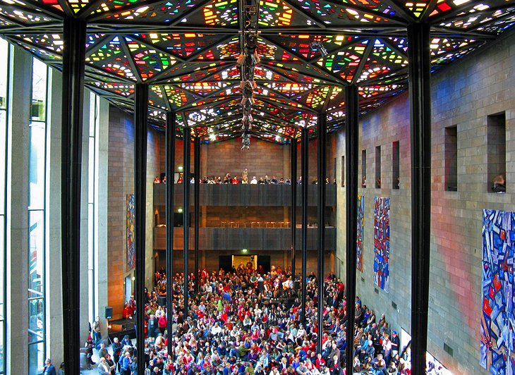
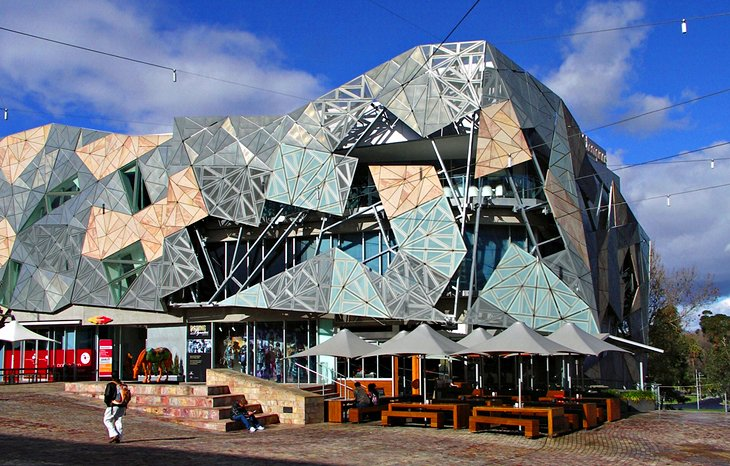

Melbourne
Melbourne is the capital and most-populous city of the Australian state of Victoria, and the second-most populous city in both Australia and Oceania. Its name generally refers to a 9,993 km2 (3,858 sq mi) metropolitan area known as Greater Melbourne, comprising an urban agglomeration of 31 local municipalities, although the name is also used specifically for the local municipality of City of Melbourne based around its central business area. The city occupies much of the northern and eastern coastlines of Port Phillip Bay and spreads into the Mornington Peninsula and the hinterlands towards the Yarra Valley, the Dandenong and Macedon Ranges. It has a population over 5 million (19% of the population of Australia, as per 2020), mostly residing to the east side of the city centre, and its inhabitants are commonly referred to as "Melburnians". Home to Aboriginal peoples for over 40,000 years, the Melbourne area served as a popular meeting place for local Kulin nation clans, Naarm being the traditional Boon wurrung name for Port Phillip Bay. A short-lived penal settlement was built at Port Phillip, then part of the British colony of New South Wales, in 1803, but it was not until 1835, with the arrival of free settlers from Van Diemen’s Land (modern-day Tasmania), that Melbourne was founded. It was incorporated as a Crown settlement in 1837, and named after the then British Prime Minister, William Lamb, 2nd Viscount Melbourne. In 1851, four years after Queen Victoria declared it a city, Melbourne became the capital of the new colony of Victoria. During the 1850s Victorian gold rush, the city entered a lengthy boom period that, by the late 1880s, had transformed it into one of the world's largest and wealthiest metropolises. After the federation of Australia in 1901, it served as the interim seat of government of the new nation until Canberra became the permanent capital in 1927. Today, it is a leading financial centre in the Asia-Pacific region and ranks 23rd globally in the 2021 Global Financial Centres Index.
Royal Botanic Gardens
Melbourne's Royal Botanic Gardens are among the finest of their kind in the world. Established in 1846, the gardens encompass two locations: Melbourne and Cranbourne. The Melbourne gardens lie in the heart of green parkland extending south of the Yarra River, about two kilometers from the CBD. Covering an area of 38 hectares, they are home to more than 10,000 plant species from around the globe, including many rare specimens. Highlights include the Ian Potter Foundation Children's Garden, designed to encourage the next generation of gardeners, and the Fern Gully Health and Wellbeing Garden, a tranquil spot to escape from the hustle and bustle of the city. The Aboriginal Heritage Walk explores the rich heritage of Indigenous Australians. In summer, live theater is a highlight of the gardens, and a moonlight cinema is set up under the stars. Rolling lawns, lakes, large trees, and abundant birdlife make this a beautiful spot to linger and enjoy a picnic or a traditional high tea at The Terrace café. No matter what time of year you visit these beautiful gardens, this is one of the best free things to do in Melbourne.
National Gallery of Victoria
Melbourne is famous for its culture, and the National Gallery of Victoria is the jewel in the crown. It's not only the oldest public art gallery in Australia, it's also the most visited. Here, you can admire more than 70,000 works of European, Asian, Oceanic, and American art in two city locations. The international collection is housed in the St. Kilda Road building, originally opened in 1968. The building is renowned for The Great Hall, where visitors are encouraged to lie on the floor and gaze at the colorful stained-glass ceiling. The extensive Australian collection is held in the Ian Potter Gallery in Federation Square, featuring the history of Australian art, from Aboriginal works through to the Heidelberg School, and contemporary mixed media. One of the highlights is the large triptych format, The Pioneer by Frederick McCubbin. There's always something new to see at the National Gallery of Victoria. It presents more than 40 exhibitions a year, as well as special events, children's programs, tours, and performances. Best of all, entry to the permanent exhibitions is free.
Federation Square
When Federation Square opened in 2002 to commemorate 100 years of federation, it divided Melburnians. There were those who loved it and those who hated it. Either way, "Fed Square" has become an integral part of the city, a popular meeting place, and a great spot for tourists to start their sightseeing. You can't miss Fed Square. It's located opposite Flinders Street Station, a major public transport hub. The building's ultra-modern design of open and closed spaces stands in striking contrast to the surrounding Victorian architecture. Live entertainment lures locals and tourists here. With more than 2,000 events annually, you can always find a performance or festival to enjoy in the central outdoor performance space and intimate indoor venues. And you'll find plenty of cafés and restaurants here, too. Museums and galleries are another highlight of visiting Federation Square. The Ian Potter Centre: NGV Australia is dedicated to Australian art. The Australian Centre for the Moving Image (ACMI) hosts fascinating interactive exhibits on screen culture (film, TV, videos, and art); and the Koorie Heritage Trust, displays art, photographs, and artifacts from the Koorie Aboriginal people, who hail from parts of Victoria and New South Wales. Best of all, entry to these museums is free.
Melbourne's Arcades and Laneways
Wandering the labyrinth of lanes and alleyways is one of the most popular things to do in Melbourne. Head to the the area around Flinders, Collins, and Bourke Streets to see elegant, interesting, and quirky Melbourne at its best. For high-end shopping, one of the most popular places to visit in Melbourne is the magnificent Block Arcade in Collins Street. With its mosaic floor, period details, and boutique shops, this is the place where late 19th-century gentry promenaded, coining the phrase, "doing the block." You'll find everything here from Haigh's Chocolates and vintage jewelry to designer fashion, gifts, and cafés. It's also worth lining up for a morning or afternoon tea at the Hopetoun Tearooms. This Melbourne icon dates back to 1892 and is the only original shop still in the arcade today. Cozy cafés beckon from the tangle of backstreets. Save time to order a coffee, pull up a chair, and people-watch for a while – it's a favorite Melbourne pastime. The opulent Royal Arcade is Melbourne's oldest arcade, and Flinders and Degraves Lanes are also well worth exploring. Want to make sure you hit all the hot spots? Several companies run sightseeing walking tours of the lanes and alleyways.